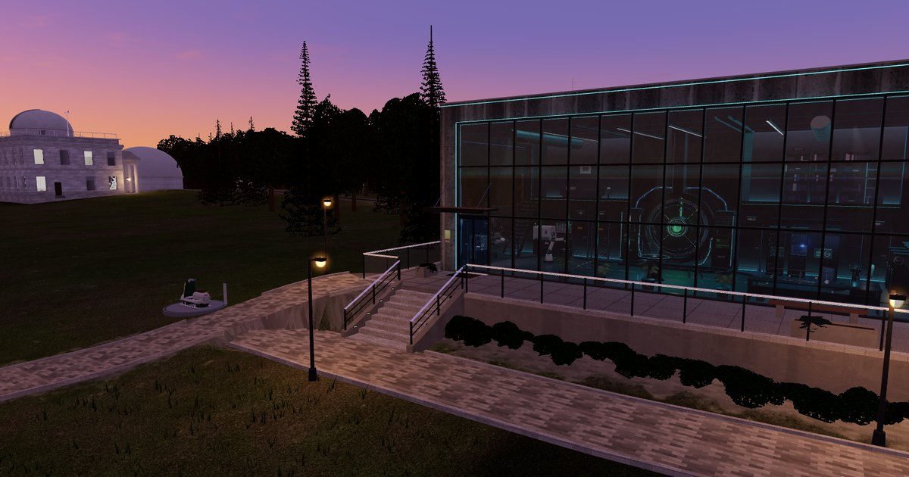
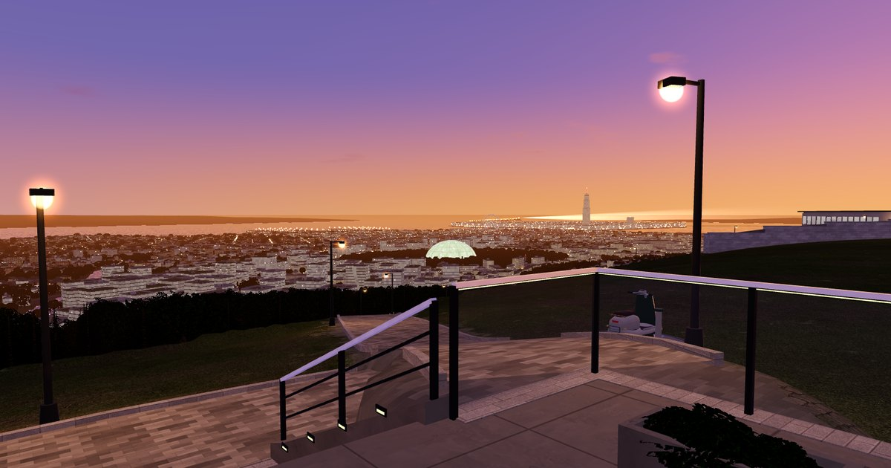

sakurami-cho の例のアプリ
桜見町を歩く
架空の港町「桜見町」を、ブラウザの 3D で歩く。好きな VRM を読み込んで、丘の上のラボから港まで、町じゅうを歩き回れる。

PC のブラウザで開くのがおすすめ（WebGL2 が要る）。最初の読み込みは約 40MB で、準備に 10〜50 秒ほどかかる（PC と回線による）。読み込み中は、段ごとの進み具合を出す。
できること
- 好きな VRM（0.x・1.0）を読み込んで、町じゅうを歩く。VRM が無くても、仮の体で歩ける
- 行き先の一覧から選ぶと、町の道を歩き、ケーブルカー・路面電車（緑電）・運河バス・ホバーにも乗って向かう。観覧車ソラノワにも乗れる
- ワープで、作り込んだ建物・駅・乗り場など 63 か所へ一瞬で移る
- 町の時刻を 0:00〜23:59 で選ぶと、太陽・空・町の灯り・交通がその時刻になる。進める速さも変えられる
操作
- 歩く: WASD か矢印のキー（Shift で走る）。地面をクリックしても、そこへ歩く
- カメラ: ドラッグで回す・ホイールで寄る
- VRM: 左上の「VRM を選ぶ」か、画面へ
.vrmのファイルを落とす - 右上の「行き先」: 行き先の一覧とワープ。左の「時刻」: 町の時刻と画質

VRM について
読み込んだ VRM は、このページの中（ブラウザの中）だけで使い、どこへも送らない。ページを閉じれば残らない。
ソース
町の地図データ・仕組み・この例のアプリのコードは GitHub にある: kanon-claire-thompson/sakurami-cho。 地図のパッケージとして、自分のアプリにも入れられる。